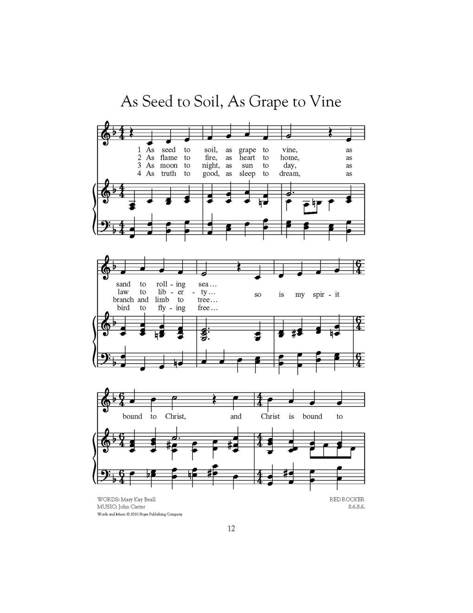
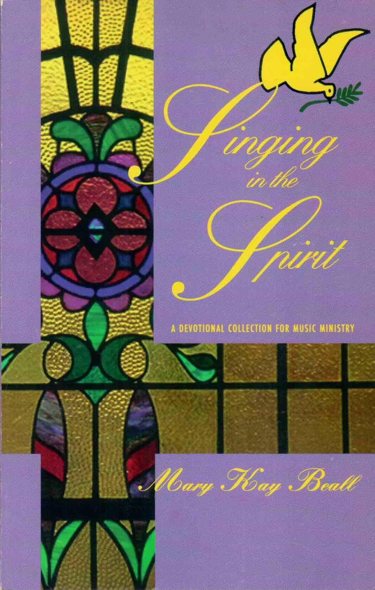

|
¡@ |
¡@ |
|
As seed to soil, as grape to vine, As sand to rolling sea... |
¡@ |
|

|
|
|
¡@ |
¡@ |


https://hymnary.org/person/Beall_Mary
| Short Name: | Mary Kay Beall |
| Full Name: | Beall, Mary Kay |
| Birth Year: | 1943 |
Mary Kay Beall was born in Akron, Ohio in 1943. She holds a B.M. degree from Ohio Wesleyan University, an M.A. from Ohio State University, and a Masters in Theological Studies from Trinity Seminary in Columbus, Ohio. She was ordained in the American Baptist church and ministers to church musicians and choirs as well as conducting clinics and reading sessions in the United States and Canada.
NN, Hymnary editor. Source: www.hopepublishing.com/
Singing in the Spirit
A Devotional Collection for Music Ministry
µÛ Mary
Kay Beall
